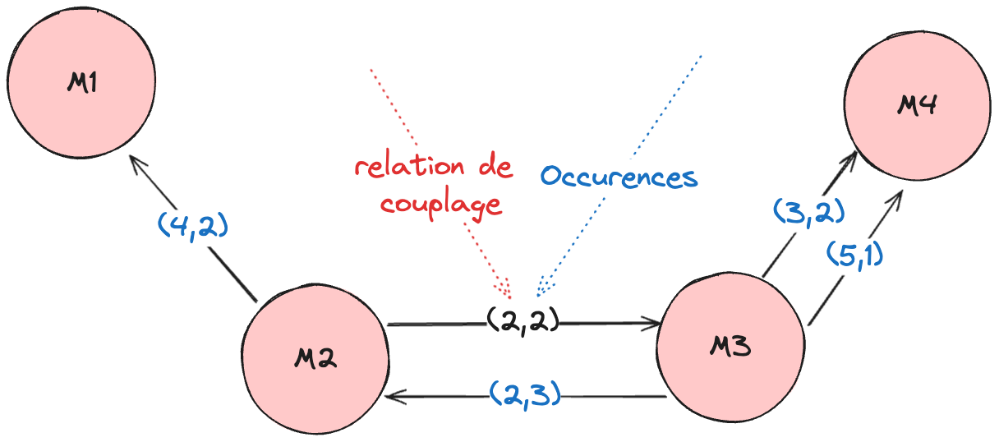

Chapitre 7 : Cohésion & couplage
Deux propriétés structurelles fondamentales : la cohésion (à l’intérieur d’un module) et le couplage (entre modules). La règle d’or : forte cohésion, faible couplage.
Note
Chapitre présenté en exposé.
La cohésion
La cohésion mesure à quel point les éléments d’un module (classe, composant) sont liés entre eux. Une cohésion élevée est préférable : le module est bien défini et ne fait qu’une seule chose. Elle favorise la maintenabilité, la compréhension et la réutilisation.
- LCOM (Lack of Cohesion in Methods)
Mesure le manque de cohésion : le nombre de paires de méthodes qui ne partagent pas de variables/attributs.
LCOM = 0 — meilleur cas (toutes les méthodes partagent des attributs) ;
LCOM = 1 — bon (perte minimale de cohésion) ;
LCOM > 1 — mauvaise pratique : la classe pourrait être scindée en classes plus petites et plus cohésives.
- Cohésion de causalité
Degré d’interdépendance entre les fonctions d’un module liées par une cause commune (même tâche/objectif). Élevée ⇒ plus facile à comprendre et maintenir.
\[\text{cohésion de causalité} = \frac{\text{relations de cause à effet entre fonctions}}{\text{relations totales entre fonctions}}\]
Le couplage
Le couplage mesure l’interdépendance entre modules/classes/composants. Un faible couplage est préférable : un module indépendant peut être modifié sans affecter le reste. Il favorise la flexibilité, la réutilisation, la maintenance et la testabilité.
- CBO (Coupling Between Objects)
Nombre de classes dont dépend directement une classe donnée. Démarche : identifier les classes → analyser les dépendances (références, appels) → compter, pour chaque classe, le nombre de classes directement liées. Plus le CBO est élevé, plus le couplage est fort (conception moins modulaire).
- Couplage entre modules
Évalue la dépendance entre méthodes/modules (nombre de méthodes d’une classe appelées par d’autres). Un couplage élevé ⇒ complexité et interactions accrues.
Graphe de couplage
Pour quantifier le couplage entre modules, on construit d’abord le graphe de couplage des modules, puis on applique :
où \(i\) est la pire relation de couplage et \(n\) le nombre d’interconnexions entre \(x\) et \(y\).
{kind=link}

Le graphe de couplage entre modules.
Exemple
Pourquoi ces métriques sont importantes
Évaluer la qualité d’un logiciel ;
identifier des problèmes potentiels ;
guider la conception et le développement ;
quantifier des concepts abstraits (qualité de l’architecture, maintenabilité, flexibilité, réutilisabilité).
Lien avec ISO/IEC 9126
Forte cohésion + faible couplage ⇒ maintenabilité (analyse, modification, stabilité, testabilité) et portabilité accrues.
Exercice
Pour une petite application de votre choix (3–5 classes) : tracez le graphe de
couplage, calculez c(x, y) pour deux paires de modules, et estimez le LCOM
d’une classe. Proposez une amélioration (scinder, regrouper, abstraire).